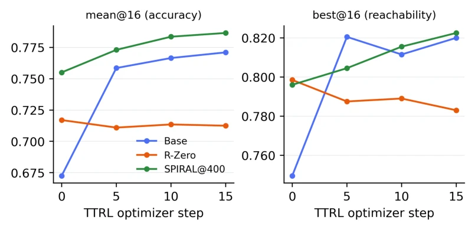
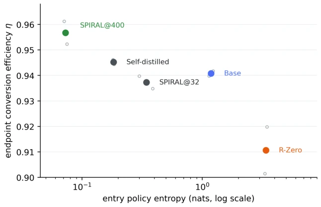

This paper casts a shadow over the TTRL community: do not merely focus on test-time fine-tuning; if the model's "entry hairstyle" (Entry State) is not properly arranged, subsequent efforts are all in vain. The authors keenly observed that a model performing well under static reasoning, if its strategy distribution is too "scattered" (high entropy), will waste precious optimization steps during the TTRL phase on "focusing attention" rather than leveraging capabilities. R-Zero serves as a counterexample; although it lacks data, it trains the model too divergently, resulting in performance inferior to the base model after TTRL. SPIRAL, on the other hand, sharpens the model just right through game self-play, achieving outstanding results. However, this research carries a hint of "metaphysical" suspicion, as it only tested Qwen3-4B and 15-step fine-tuning, and whether using entropy as a proxy metric can truly capture all semantic diversity remains to be verified with more models and longer cycles. Overall, viewing the "preparation phase" as a state control problem is an excellent perspective, but do not expect low entropy to be a panacea; be careful not to narrow the path.
The core pain point of Test-time reinforcement learning (TTRL) [40] lies in its reliance on supervision signals generated from the model's own samples. If the strategy distribution at the onset of adaptation is too diffuse, its self-consensus becomes unreliable, causing the limited adaptation budget to be wasted on concentrating probability mass rather than on capability expression. Existing works such as [40] focus on optimizing the adaptation process itself, or like [30, 14, 37] regulate uncertainty within the adaptation loop, yet often overlook the "entry state" prior to adaptation as a critical design variable. As noted by [35, 31, 8], RL primarily reweights existing behaviors of the base model rather than creating new capabilities. Therefore, if the base model itself resides in a "high entropy" state, TTRL struggles to efficiently convert reachable capabilities into reliable outputs. Furthermore, existing data-free training methods such as R-Zero [9] or SPIRAL [15], while capable of improving the model, lack quantitative analysis regarding how they influence subsequent TTRL preparation states, leaving us unaware of which training objective generates the "entry state" most suitable for TTRL.
The paper proposes an "Entry-State Sharpening" framework, treating checkpoint preparation prior to TTRL as a state control problem. The overall workflow is divided into two steps: first, transform the pre-trained base model π0 into an entry checkpoint π_entry with a specific state via a data-free training operator Pm; second, input π_entry into the fixed TTRL adaptation process AT to obtain the final policy πT. The core innovation lies in decoupling "Reachability" and "Conversion Efficiency". The authors define conversion efficiency η = mean@16 / best@16, where mean@16 is sampling accuracy and best@16 estimates reachable capability. The objective is to improve η without reducing best@16. To quantify the state, the authors introduce "Entry Policy Entropy" as a label-free control signal, calculating the average token-level entropy of the model on the initial TTRL batch. Experiments compared three data-free training paths: 1) Uncertainty-based curriculum evolution (R-Zero [9]), aiming to enable model self-evolution; 2) Game-based self-play (SPIRAL [15]), training through environment-verified discrete outcomes; 3) In-domain label-free self-distillation, directly utilizing the model's own consistency to generate pseudo-demonstrations for fine-tuning. By comparing entropy values generated by different operators and final conversion efficiency, the authors demonstrate the importance of actively controlling the entry state by adjusting training objectives, rather than blindly pursuing entropy minimization.
Experiments are based on the Qwen3-4B base, evaluated on three datasets: MATH, GPQA, and AMC, using a unified 15-step TTRL protocol (GRPO optimization, 32-vote reward). Five data-free checkpoints were compared: Base, R-Zero, SPIRAL@32, SPIRAL@400, and the self-distillation checkpoint. Results show that entry entropy and final conversion efficiency exhibit a very strong negative correlation (Spearman ρ = -0.90, ρ = -0.99 after controlling for reachability). R-Zero, due to high entropy (3.39 nats), leads to low conversion efficiency, with final performance even lower than the base; whereas SPIRAL@400 has extremely low entropy (0.07 nats) and achieved the highest accuracy on MATH and GPQA. The self-distillation experiment further demonstrates that through intervention, entropy can be reduced from 1.186 to 0.183, improving conversion efficiency, but excessive sharpening will damage reachability (best@16 decreases). This indicates that an optimal sharpening degree exists, and entry entropy is an effective indicator for predicting TTRL readiness.

Figure 1: Identical 15-step TTRL on unlabeled MATH problems for Base, R-Zero, and SPIRAL@400; means over seeds {2, 3}. R-Zero starts 4.5 accuracy points ahead of Base and finishes 5.8 points behind it, while SPIRAL@400 finishes highest despite never training on math.

Figure 2: Entry policy entropy versus endpoint conversion efficiency for the five data-free checkpoints. Filled markers denote seed means and hollow markers individual seeds {2, 3}.